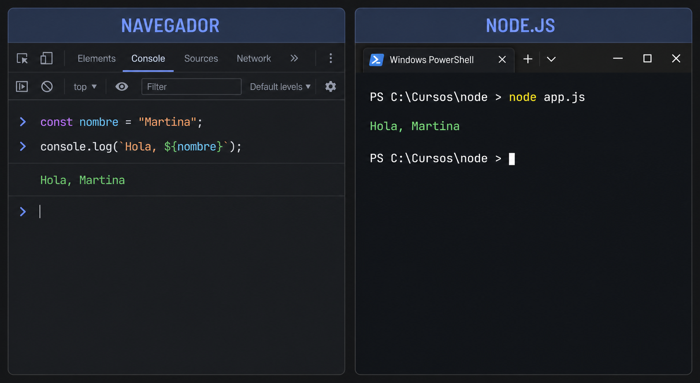
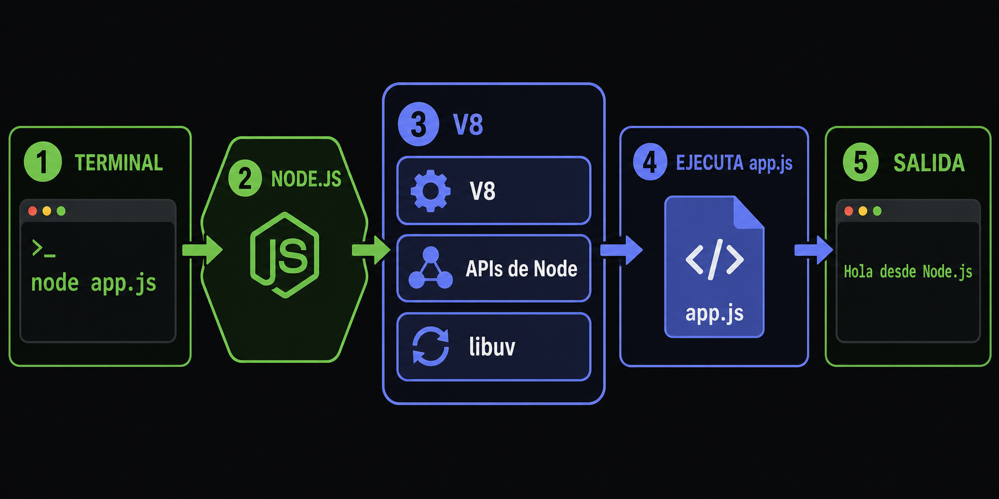
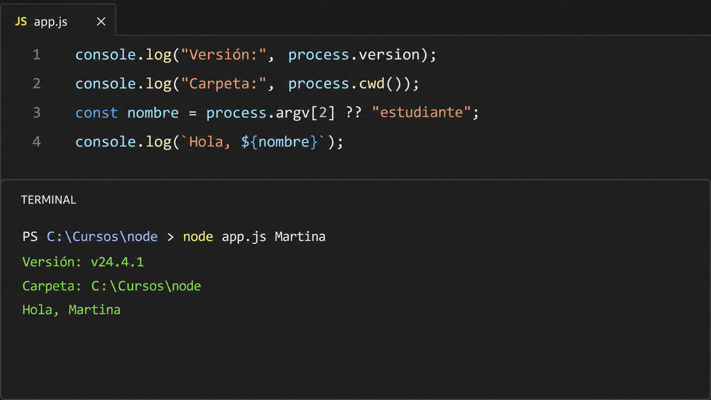

El mismo lenguaje en dos entornos
programa.js
const nombre = "Martina";
console.log(`Hola, ${nombre}`);
Navegador y Node.js
window y document.
Manipula páginas y responde a clics.
El código vive en una pestaña.
process y APIs del sistema.
Ejecuta programas, herramientas y servidores.
Comienza desde la terminal.

Motor de JavaScript
Lee, compila y ejecuta el lenguaje.
Capacidades de Node
Procesos, archivos, rutas, red y temporizadores.
Entrada y salida
Coordina operaciones asíncronas.
Laboratorio con process
app.js
console.log("Node.js está funcionando");
console.log("Versión:", process.version);
console.log("Carpeta actual:", process.cwd());
const nombre = process.argv[2] ?? "estudiante";
console.log(`Hola, ${nombre}`);Terminal
node app.js Martina
Una API que no existe aquí
app.js
console.log(document.title);
// ReferenceError: document is not definedCOMPROBACIÓN
0/4Reconozco el runtime
Marcá cada punto después de comprobarlo.